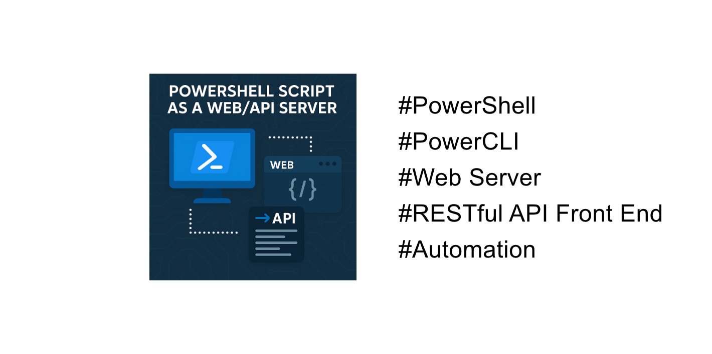
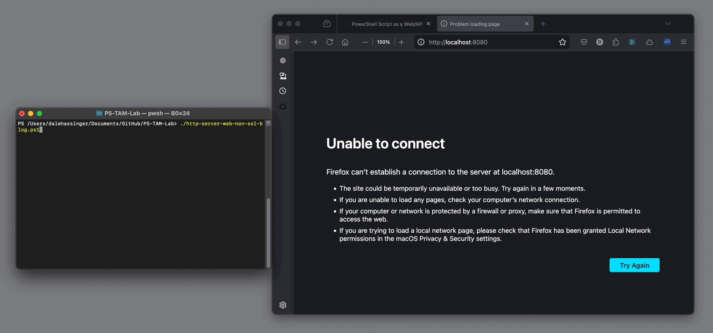
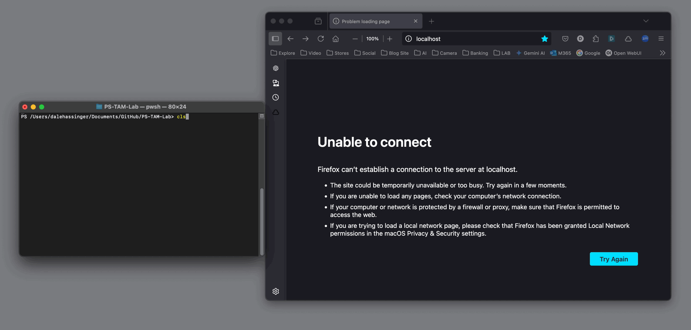
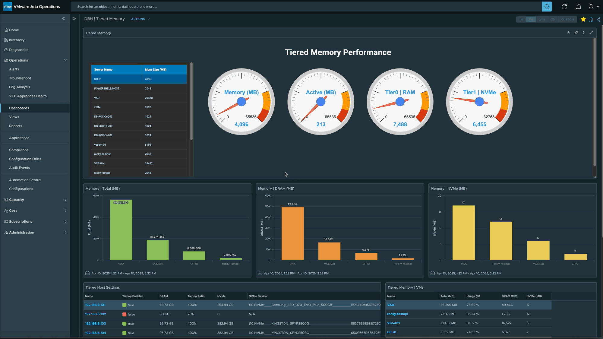
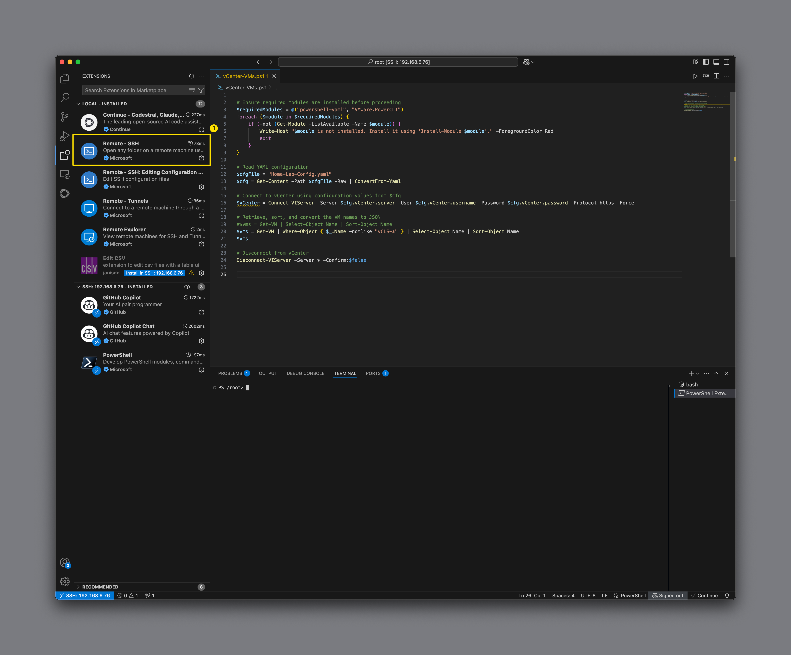
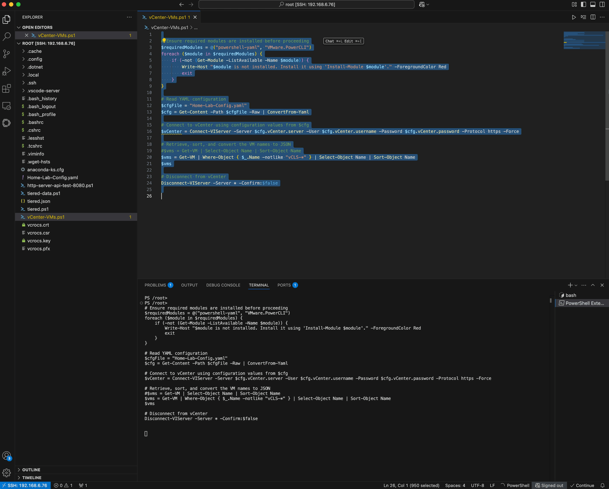
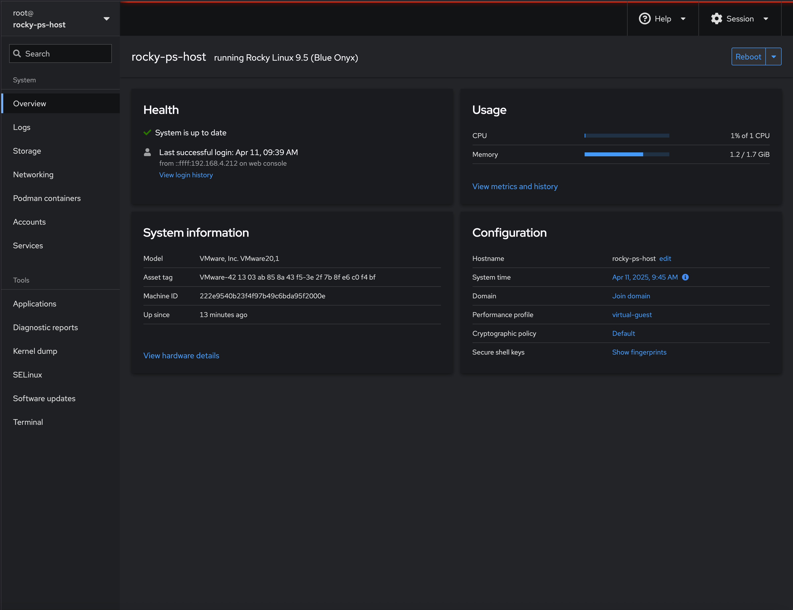
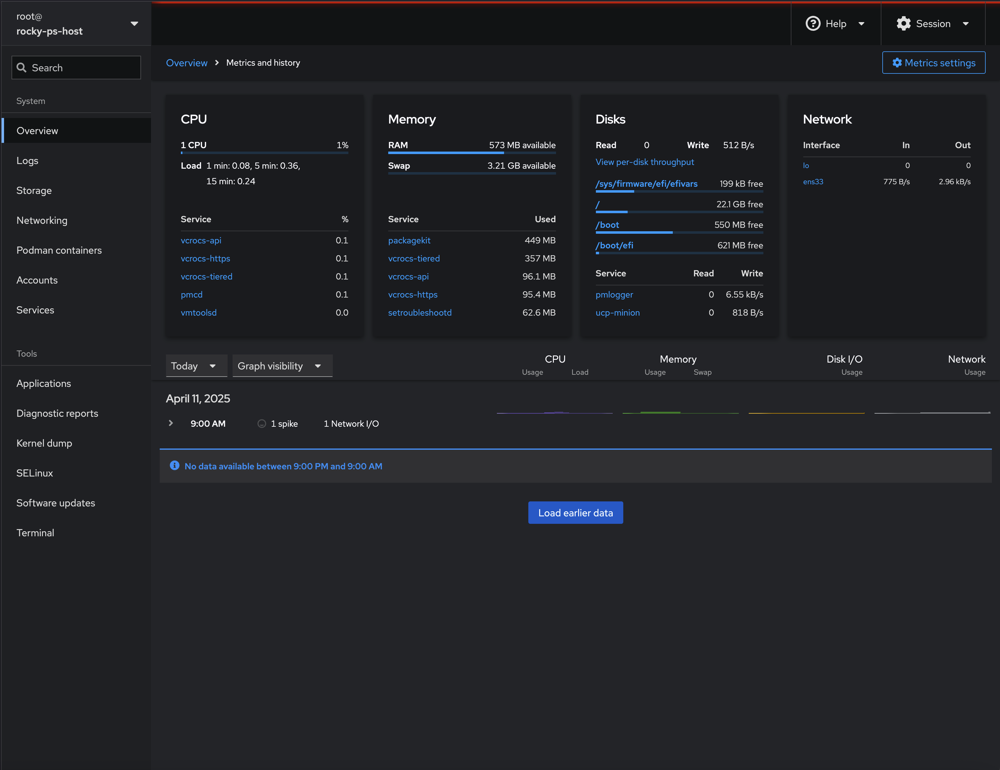
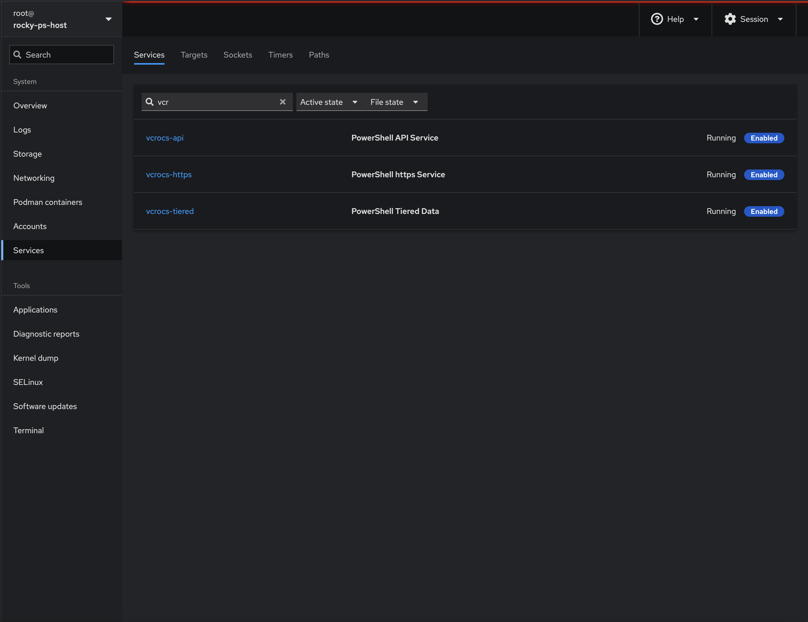

PowerShell Script as a Web/API Server

How to use PowerShell Scripts as a Web Server or RESTful API Front End Server...
I’m constantly discovering new things, even after years of working with PowerShell. This blog post highlights a feature I only recently came across, and I’m excited to share it with you. My goal is to spark some ideas and inspire new use cases in your own automation journey.
Use Case:
Here’s a PowerShell use case I hadn’t come across until just last week: using a PowerShell script as a web server—no separate web server installation needed. Just run the script, and your machine starts listening for connections on the port you specify. This idea immediately got my wheels turning about all the possibilities this unlocks. You’ll find some example scripts included in this blog.
After getting a basic listener running on port 8080 with a non-SSL connection, I was curious how complex it would be to switch to port 443 with SSL. A bit of research showed it doesn’t take much—just a few changes to the script. Examples of that are also included here.
Once I saw how simple it was to handle incoming web requests, I naturally started thinking: what if a PowerShell script could act as an API front end? I tweaked the listener script to respond to RESTful API requests—and just like that, PowerShell was replying with data to API calls. Not every system you need to pull data from has a REST API, but with this technique, you can make your own. That’s a game-changer for my automation.
PowerShell Script for RESTful API Requests Use Case:
One example is the VCF Operations Management Pack (MP) Builder, which needs to make REST API calls. With this setup, a PowerShell script can serve that role directly. If you can script it, you can expose it as an API and include the data within VCF Operations!
In my automation journey, I’ve yet to find something I couldn’t automate with PowerShell. Adding modules to your scripts unlocks even more use cases—like connecting to remote systems over SSH and parsing the results. Having a PowerShell script act as a RESTful API front end opens up endless possibilities for automation and integration.
Code Examples:
This example is a simple Web Server (non-ssl) that displays text along with the current date and time, which updates on every page load or refresh.
- Script can be used to show any web page and data you can create. Think about some cool use cases.
- The image demonstrates how the time updates on each page refresh, highlighting that the web page is dynamic.

# Web Server for Home Lab Use and a Nice way to see how PowerShell can be used.
# Created By: Dale Hassinger
param(
[int]$port = 8080 # Define a port parameter with a default value of 8080
)
# Flag for cancellation, used to control when to stop the server
$cancelled = $false
# Register an event handler for Ctrl+C (ConsoleBreak)
# When triggered, it sets the $cancelled flag to true so the server can stop gracefully
$null = Register-EngineEvent -SourceIdentifier ConsoleBreak -Action {
Write-Host "`nCtrl+C detected. Stopping server..."
$global:cancelled = $true
}
try {
# Create a new TCP listener that listens on any IP address and the specified port
$listener = [System.Net.Sockets.TcpListener]::new([System.Net.IPAddress]::Any, $port)
try {
# Start the TCP listener
$listener.Start()
Write-Host "Server started, listening on port $port..."
} catch {
# Handle failure to start the listener
Write-Host "Failed to start listener: $_"
return
}
# Main loop to keep the server running until cancelled
while (-not $cancelled) {
# Check if a client is attempting to connect
if ($listener.Pending()) {
# Accept the incoming TCP client connection
$client = $listener.AcceptTcpClient()
Write-Host "Client connected: $($client.Client.RemoteEndPoint)"
# Get the network stream and setup reader/writer for communication
$stream = $client.GetStream()
$reader = [System.IO.StreamReader]::new($stream)
$writer = [System.IO.StreamWriter]::new($stream)
$writer.AutoFlush = $true # Ensure output is flushed immediately
# Read the first line of the HTTP request from the client
$request = $reader.ReadLine()
Write-Host "Received: $request"
# Get the current date and time to include in the HTML response
$currentDateTime = Get-Date -Format "dddd, MMMM dd, yyyy hh:mm:ss tt"
# Define the HTML content to return as the response
$htmlContent = @"
<!DOCTYPE html>
<html lang="en">
<head>
<meta charset="UTF-8">
<title>PowerShell Web Example</title>
<meta name="viewport" content="width=device-width, initial-scale=1.0">
<style>
* {
box-sizing: border-box;
}
body {
margin: 0;
padding: 0;
font-family: 'Segoe UI', Tahoma, Geneva, Verdana, sans-serif;
background: linear-gradient(120deg, #f0f2f5, #e2e8f0);
display: flex;
justify-content: center;
align-items: center;
height: 100vh;
}
.container {
background-color: #ffffff;
padding: 40px;
border-radius: 16px;
box-shadow: 0 10px 30px rgba(0,0,0,0.1);
max-width: 600px;
width: 90%;
text-align: center;
}
h1 {
color: #1a202c;
font-size: 2rem;
margin-bottom: 20px;
}
.datetime {
font-size: 1.2rem;
color: #4a5568;
}
</style>
</head>
<body>
<div class="container">
<h1>Welcome to a PowerShell Web Site Example</h1>
<div class="datetime">Current Date and Time: $currentDateTime</div>
</div>
</body>
</html>
"@
# Combine HTTP headers and the HTML content into a full HTTP response
$response = "HTTP/1.1 200 OK`r`nContent-Type: text/html; charset=UTF-8`r`n`r`n$htmlContent"
Write-Host "Sending response..."
# Send the response back to the client
$writer.WriteLine($response)
# Clean up the network resources
$reader.Close()
$writer.Close()
$client.Close()
Write-Host "Client disconnected"
} else {
# Sleep briefly to reduce CPU usage while waiting for new connections
Start-Sleep -Milliseconds 100
}
}
}
finally {
# Stop the listener if it exists and isn't already connected
if ($listener -and $listener.Server.Connected -eq $false) {
$listener.Stop()
Write-Host "Server stopped."
}
# Clean up the registered Ctrl+C event
Unregister-Event -SourceIdentifier ConsoleBreak -ErrorAction SilentlyContinue
Remove-Event -SourceIdentifier ConsoleBreak -ErrorAction SilentlyContinue
}
This example is a simple Web Server (with ssl) that displays text along with the current date and time, which updates on every page load or refresh.
- Script can be used to show any web page and data you can create. Think about some cool use cases.
- The image demonstrates how the time updates on each page refresh, highlighting that the web page is dynamic.

# Web Server for Home Lab Use and a Nice way to see how PowerShell can be used.
# Created By: Dale Hassinger
param(
[int]$port = 443, # Default port set to 443 for HTTPS
[string]$certPath = "/Users/dalehassinger/Documents/GitHub/PS-TAM-Lab/vcrocs.pfx", # Path to the SSL certificate (.pfx)
[string]$certPassword = "1234" # Password for the SSL certificate
)
# Attempt to load the SSL certificate from the specified path using the provided password
try {
$certificate = New-Object System.Security.Cryptography.X509Certificates.X509Certificate2($certPath, $certPassword)
Write-Host "Certificate loaded successfully."
} catch {
# If certificate loading fails, write the error and exit
Write-Host "Failed to load certificate: $_"
return
}
# Define a cancellation flag to gracefully stop the server when Ctrl+C is pressed
$cancelled = $false
# Register an event to catch Ctrl+C (ConsoleBreak) and flip the cancellation flag
$null = Register-EngineEvent -SourceIdentifier ConsoleBreak -Action {
Write-Host "`nCtrl+C detected. Stopping server..."
$global:cancelled = $true
}
try {
# Initialize a TCP listener on all network interfaces for the specified port
$listener = [System.Net.Sockets.TcpListener]::new([System.Net.IPAddress]::Any, $port)
try {
# Start the TCP listener
$listener.Start()
Write-Host "Server started, listening on port $port..."
} catch {
# Handle failure to start the listener
Write-Host "Failed to start listener: $_"
return
}
# Server loop that handles incoming client connections until cancelled
while (-not $cancelled) {
if ($listener.Pending()) {
# Accept an incoming TCP client connection
$client = $listener.AcceptTcpClient()
Write-Host "Client connected: $($client.Client.RemoteEndPoint)"
# Get the underlying network stream from the TCP client
$networkStream = $client.GetStream()
# Wrap the network stream in an SslStream to secure communication
$sslStream = New-Object System.Net.Security.SslStream($networkStream, $false)
try {
# Authenticate the server with the loaded certificate, enforcing TLS 1.2
$sslStream.AuthenticateAsServer($certificate, $false, [System.Security.Authentication.SslProtocols]::Tls12, $false)
Write-Host "SSL Authentication successful."
} catch {
# If TLS handshake fails, close the client connection and continue
Write-Host "SSL Authentication failed: $_"
$client.Close()
continue
}
# Create a StreamReader and StreamWriter to handle HTTP data over SSL
$reader = New-Object System.IO.StreamReader($sslStream)
$writer = New-Object System.IO.StreamWriter($sslStream)
$writer.AutoFlush = $true
try {
# Attempt to read the first line of the HTTP request
$request = $reader.ReadLine()
Write-Host "Received: $request"
} catch {
# Handle any errors while reading the request, such as decryption issues
Write-Host "Error reading request (possible decryption issue): $_"
$client.Close()
continue
}
# Generate the current date/time to include in the response page
$currentDateTime = Get-Date -Format "dddd, MMMM dd, yyyy hh:mm:ss tt"
# Define HTML content to serve in the response, styled with CSS and displaying the current time
$htmlContent = @"
<!DOCTYPE html>
<html lang="en">
<head>
<meta charset="UTF-8">
<title>PowerShell Web Example</title>
<meta name="viewport" content="width=device-width, initial-scale=1.0">
<style>
* {
box-sizing: border-box;
}
body {
margin: 0;
padding: 0;
font-family: 'Segoe UI', Tahoma, Geneva, Verdana, sans-serif;
background: linear-gradient(120deg, #f0f2f5, #e2e8f0);
display: flex;
justify-content: center;
align-items: center;
height: 100vh;
}
.container {
background-color: #ffffff;
padding: 40px;
border-radius: 16px;
box-shadow: 0 10px 30px rgba(0,0,0,0.1);
max-width: 600px;
width: 90%;
text-align: center;
}
h1 {
color: #1a202c;
font-size: 2rem;
margin-bottom: 20px;
}
.datetime {
font-size: 1.2rem;
color: #4a5568;
}
</style>
</head>
<body>
<div class="container">
<h1>Welcome to a PowerShell Web Site Example using <span style="color: green;">SSL connection</span></h1>
<div class="datetime">Current Date and Time: $currentDateTime</div>
</div>
</body>
</html>
"@
# Construct a basic HTTP 200 OK response with the HTML content
$response = "HTTP/1.1 200 OK`r`nContent-Type: text/html; charset=UTF-8`r`n`r`n$htmlContent"
Write-Host "Sending response..."
try {
# Send the response to the client
$writer.WriteLine($response)
} catch {
# Catch any errors during transmission
Write-Host "Error sending response: $_"
}
# Clean up: close the streams and the client connection
$reader.Close()
$writer.Close()
$client.Close()
Write-Host "Client disconnected"
} else {
# Wait briefly before checking for new clients to reduce CPU usage
Start-Sleep -Milliseconds 100
}
}
}
finally {
# Stop the listener and clean up resources if no active connections remain
if ($listener -and $listener.Server.Connected -eq $false) {
$listener.Stop()
Write-Host "Server stopped."
}
# Unregister and remove the Ctrl+C event handler
Unregister-Event -SourceIdentifier ConsoleBreak -ErrorAction SilentlyContinue
Remove-Event -SourceIdentifier ConsoleBreak -ErrorAction SilentlyContinue
}
This example is a simple RESTful API front end that returns any data that you have in the PS script.
(4) Sample API calls:
- Returns Status
- Returns a simple Hello
- Returns all the VM Names in my lab vCenter
- Returns Tiered Memory usage of VMs in my Lab
- Script can be used to return any data you can create. Think about some cool use cases.

# API Server for Home Lab Use and a Nice way to see how PowerShell can be used.
# Created By: Dale Hassinger
param(
[int]$port = 8080 # Set the port for the HTTP listener (default 8080)
)
# Ensure required PowerShell modules are installed
$requiredModules = @("powershell-yaml", "VMware.PowerCLI")
foreach ($module in $requiredModules) {
if (-not (Get-Module -ListAvailable -Name $module)) {
Write-Host "$module is not installed. Install it using 'Install-Module $module'." -ForegroundColor Red
exit
}
}
# Load YAML configuration file (contains vCenter and ESXi credentials)
$cfgFile = "Home-Lab-Config.yaml"
$cfg = Get-Content -Path $cfgFile -Raw | ConvertFrom-Yaml
# Flag for gracefully stopping the API server with Ctrl+C
$cancelled = $false
$null = Register-EngineEvent -SourceIdentifier ConsoleBreak -Action {
# Log a Ctrl+C (ConsoleBreak) interruption
New-LogEvent -message "`nCtrl+C detected. Stopping server..." -level "warn"
$global:cancelled = $true
}
# Function to log messages with timestamp and level coloring
Function New-LogEvent {
param(
[string]$message,
[string]$level
)
$timeStamp = Get-Date -Format "MM-dd-yyyy HH:mm:ss"
switch ($level.ToLower()) {
"info" { Write-Host "[$timeStamp] $message" -ForegroundColor Green }
"warn" { Write-Host "[$timeStamp] $message" -ForegroundColor Red }
default { Write-Host "[$timeStamp] $message" -ForegroundColor Yellow }
}
}
# Main function to process incoming API requests
function Get-ApiResponse {
param (
[string]$method,
[string]$path
)
# Split path into route and query string (e.g. /hello?name=Dale)
$route, $queryString = $path -split '\?', 2
$params = @{}
if ($queryString) {
$pairs = $queryString -split '&'
foreach ($pair in $pairs) {
$key, $value = $pair -split '=', 2
$params[$key] = $value
}
}
# Route handling using switch based on method and path
switch ("$method $route") {
"GET /hello" {
# Return a greeting, optionally personalized with ?name=
$name = $params["name"]
if (-not $name) { $name = "vCrocs" }
return @{
StatusCode = "200 OK"
ContentType = "application/json"
Body = "{ `"message`": `"Hello, $name from PowerShell API`" }"
}
}
"GET /status" {
# Return a simple health check status with timestamp
return @{
StatusCode = "200 OK"
ContentType = "application/json"
Body = '{ "status": "ok", "time": "' + (Get-Date).ToString("o") + '" }'
}
}
"GET /vms" {
# Connect to vCenter and retrieve list of VMs (excluding vCLS)
$vCenter = Connect-VIServer -Server $cfg.vCenter.server -User $cfg.vCenter.username -Password $cfg.vCenter.password -Protocol https
$vms = Get-VM | Where-Object { $_.Name -notlike "vCLS-*" } | Select-Object Name | Sort-Object Name
$return = $vms | ConvertTo-Json
Disconnect-VIServer -Server * -Confirm:$false
return @{
StatusCode = "200 OK"
ContentType = "application/json"
Body = "{""results"":$return}"
}
}
"GET /tiered" {
# Return detailed memory tier stats (Tier0-RAM and Tier1-NVMe) for each VM
# Uses sshpass to connect to each host and run esxcli and memstats
$vCenter = Connect-VIServer -Server $cfg.vCenter.server -User $cfg.vCenter.username -Password $cfg.vCenter.password -Protocol https
$esxiHosts = Get-VMHost | Select-Object Name | Sort-Object Name
$combinedResults = @()
foreach ($esxiHost in $esxiHosts) {
$server = $esxiHost.Name
$username = $cfg.Host101.username
$password = $cfg.Host101.password
New-LogEvent -message ("Connecting to Host Name: " + $server) -level "info"
if (-not (Get-Command sshpass -ErrorAction SilentlyContinue)) {
Write-Error "sshpass is not installed or not in your PATH. Please install sshpass and try again."
exit 1
}
# Get VM ID to Name mapping
$vmCommand = "esxcli --formatter csv vm process list | cut -d ',' -f 2,5"
$args_vm = @("-p", $password, "ssh", "-o", "ConnectTimeout=10", "-o", "PreferredAuthentications=password", "-o", "PubkeyAuthentication=no", "-o", "StrictHostKeyChecking=no", "$username@$server", $vmCommand)
$vmOutput = & sshpass @args_vm
$VMXCartelID = $vmOutput | ConvertFrom-Csv
# Run memstats to get memory usage details
$memCommand = 'memstats -r vmtier-stats -u mb -s name:memSize:active:tier0Consumed:tier1Consumed'
$args_mem = @("-p", $password, "ssh", "-l", $username, $server, $memCommand)
$memOutput = & sshpass @args_mem
# Clean and parse memstats output
$lines = $memOutput -split "`n" | ForEach-Object { $_.Trim() } | Where-Object {
$_ -notmatch '^-{2,}|Total|Start|No.|VIRTUAL|Unit|Selected'
}
$pattern = '^(?<name>\S+)\s+(?<memSize>\d+)\s+(?<active>\d+)\s+(?<tier0Consumed>\d+)\s+(?<tier1Consumed>\d+)$'
$tieredMEM = @()
foreach ($line in $lines) {
if ($line -match $pattern) {
$tieredMEM += [pscustomobject]@{
Name = $matches['name']
MemSizeMB = [int]$matches['memSize']
ActiveMB = [int]$matches['active']
"Tier0-RAM" = [int]$matches['tier0Consumed']
"Tier1-NVMe" = [int]$matches['tier1Consumed']
}
}
}
# Clean up names and match Cartel IDs to Display Names
$tieredMEM | ForEach-Object { $_.Name = $_.Name -replace '^vm\.', '' }
$vmNameMap = @{}
foreach ($entry in $VMXCartelID) { $vmNameMap[$entry.VMXCartelID] = $entry.DisplayName }
foreach ($vm in $tieredMEM) {
if ($vmNameMap.ContainsKey($vm.Name)) { $vm.Name = $vmNameMap[$vm.Name] }
}
# Remove system VMs (vCLS)
$tieredMEM = $tieredMEM | Where-Object { $_.Name -notlike "vCLS-*" }
# Aggregate host results
$combinedResults += $tieredMEM
}
$return = $combinedResults | ConvertTo-Json
Disconnect-VIServer -Confirm:$false
return @{
StatusCode = "200 OK"
ContentType = "application/json"
Body = "{""results"":$return}"
}
}
default {
# Fallback/default response
return @{
StatusCode = "200 OK"
ContentType = "application/json"
Body = '{ "results": "Default API reply" }'
}
}
}
}
# Start the TCP listener and main server loop
try {
$listener = [System.Net.Sockets.TcpListener]::new([System.Net.IPAddress]::Any, $port)
try {
$listener.Start()
New-LogEvent -message "API server started on port $port..." -level "info"
} catch {
Write-Host "Failed to start listener: $_"
return
}
while (-not $cancelled) {
if ($listener.Pending()) {
$client = $listener.AcceptTcpClient()
$stream = $client.GetStream()
$reader = [System.IO.StreamReader]::new($stream)
$writer = [System.IO.StreamWriter]::new($stream)
$writer.AutoFlush = $true
$requestLine = $reader.ReadLine()
New-LogEvent -message "Received: $requestLine" -level "info"
if ($requestLine -match '^(GET|POST|PUT|DELETE) (/[^ ]*)') {
$method = $matches[1]
$path = $matches[2]
$apiResponse = Get-ApiResponse -method $method -path $path
$body = $apiResponse.Body
# Construct HTTP response manually
$response = @"
HTTP/1.1 $($apiResponse.StatusCode)
Content-Type: $($apiResponse.ContentType)
Content-Length: $($body.Length)
$body
"@
$writer.Write($response)
# Log short response preview
if ($body.Length -ge 50) {
$shortBody = $body.Substring(0,50) + "..."
} else {
$shortBody = $body
}
New-LogEvent -message "Returned: $shortBody" -level "info"
}
# Clean up connection
$reader.Close()
$writer.Close()
$client.Close()
New-LogEvent -message "Client disconnected"
} else {
Start-Sleep -Milliseconds 100
}
}
}
finally {
# Cleanup on exit
$listener.Stop()
New-LogEvent -message "Server stopped." -level "warn"
Unregister-Event -SourceIdentifier ConsoleBreak -ErrorAction SilentlyContinue
Remove-Event -SourceIdentifier ConsoleBreak -ErrorAction SilentlyContinue
}
- YAML file contents to use with the PowerShell Script
- I've been using a YAML file with all my current scripts to store values for connecting to vCenter, VCF Operations, VCF Automation, and more. If anything changes, I just update the YAML file, and all the scripts continue to work without any issues.
# vCenter Connection
vCenter:
server: vcsa8x.vcrocs.local
username: administrator@vcrocs.local
password: VMware1!
ignoreCertErrors: true
# A Single ESXi Host Connection
Host101:
server: 192.168.6.101
username: root
password: VMware1!
# VCF Operations
OPS:
opsURL: https://vao.vcrocs.local
opsUsername: admin
opsPassword: VMware1!
authSource: local
# VCF Automation
Automation:
autoURL: vaa.vcrocs.local
autoUsername: configadmin
autoPassword: VMware1!
autoDomain: System Domain
Here is a sample PowerShell Script web page that is used with the Text Display Widget within a VCF Operations Dashboard.

I have been using Rocky Linux more in my lab for testing PowerShell Automation scripts.
Here is how I install PowerShell on Rocky Linux:
# Install PowerShell
sudo dnf install https://github.com/PowerShell/PowerShell/releases/download/v7.5.0/powershell-7.5.0-1.rh.x86_64.rpm
# Turn off Firewall in your lab to make testing easier
sudo systemctl stop firewalld
sudo systemctl disable firewalld
# Install sshpass to use with PS scripts where you want to make a SSH connection
sudo dnf install epel-release
sudo dnf install sshpass
sshpass -V
How to setup a PowerShell Script to run as a service with Rocky Linux:
# Create a new service file (e.g., myscript.service) under /etc/systemd/system/:
sudo nano /etc/systemd/system/vcrocs-api.service
# Then add the following content:
[Unit]
Description=PowerShell API Service
After=network.target
[Service]
Type=simple
ExecStart=/usr/bin/pwsh -File /root/http-server-api-test-8080.ps1
Restart=on-failure
RestartSec=10
User=root
WorkingDirectory=/root
[Install]
WantedBy=multi-user.target
# After saving the file, reload systemd to recognize the new service:
sudo systemctl daemon-reload
# Then enable the service so it starts on boot:
sudo systemctl enable vcrocs-api.service
# Start the service
sudo systemctl start vcrocs-api.service
# Service Status
sudo systemctl status vcrocs-api.service
# Stop the Service
sudo systemctl stop vcrocs-api.service
Use Visual Studio Code (VS Code) to create, edit, and run PowerShell scripts on your remote Linux-based PowerShell servers:
- Try using the VS Code Remote-SSH extension with a Linux server — it’s a setup I really enjoy. Your code is saved and executed directly on the remote Linux machine.

Running a simple PS script on a remote Linux server that uses the VMware PowerCLI module.

I can edit any type of file I need to on the remote Linux server using this technique

Steps to create a Self Signed SSL Certifcate to test with:
# Using openssl
openssl genrsa -out vcrocs.key 2048
openssl req -new -key vcrocs.key -out vcrocs.csr
openssl x509 -req -days 365 -in vcrocs.csr -signkey vcrocs.key -out vcrocs.crt
openssl pkcs12 -export -out vcrocs.pfx -inkey vcrocs.key -in vcrocs.crt
If you’re primarily a Windows user and hesitant about using Linux, here’s a quick tip: try installing Cockpit — it provides a user-friendly GUI to help manage your Linux VM with ease.
- Here’s some IT career advice: Get comfortable working with both Windows and Linux. Both operating systems play key roles in enterprise environments.
- If you’re a Linux user, don’t shy away from using PowerShell. With VMware PowerCLI, automation becomes much easier and more powerful.
Steps to install Cockpit on Rocky Liunux:
# Update the server
sudo dnf update -y
# install Cockpit
sudo dnf install cockpit -y
sudo systemctl enable --now cockpit.socket
# FW changes
sudo firewall-cmd --permanent --add-service=cockpit
sudo firewall-cmd --reload
# Allow root to use Cockpit
sudo nano /etc/cockpit/disallowed-users
# Remove root
Nice UI for Linux Management:

Watch Performance when the PowerShell scripts are running:

See the PowerShell Services:

Lessons learned:
- A PowerShell Script can be a Web Server or a RESTful API front end
- Great way to test web pages in a lab or simple web server
- The above scripts are cross platform. Can run on Windows, Mac or Linux
- I like that I can take a bare bones Linux VM, install PowerShell, add the script and I have web pages available or a RESTful API front end
In my blogs, I often emphasize that there are multiple methods to achieve the same objective. This article presents just one of the many ways you can tackle this task. I've shared what I believe to be an effective approach for this particular use case, but keep in mind that every organization and environment varies. There's no definitive right or wrong way to accomplish the tasks discussed in this article.
Always test new setups and processes, like those discussed in this blog, in a lab environment before implementing them in a production environment.
If you found this blog article helpful and it assisted you, consider buying me a coffee to kickstart my day.